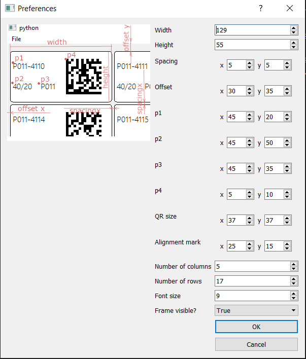

Prepare the Etiketten A4 paper suitable for Laserprinter.
Start the script. You should see the window like this:

If this is the first time you start it, you have to set up the labels dimmensions and other layout features. select File->Preferences to open Preferences dialog box. The values below meet the requirements of Our customers. Any changes made in this dialog will be saved to the file database parms.dat. If you want to reset to default settings, just remove all parms files (dat, bak, dir). Close the dialog by pressing OK if you want to save the changes.
Select File->Generate labels to open dialog 'Generate page layout'
Set the overall number of labels to be printed in 'Number of labels'
Set the first label number (integer), week number/timestamp (string) and lot (string) in the next 3 textfields
Press 'Generate' button to save the values in the database, generate layout and close the dialog.

Select File->Print to open Print dialog. Set up the printer and print. Keep in mind that you would probably need to select 'single side printing' in the printing settings dialog.
Finally laser the labels using 3 alignment marks.
Agafonov Denis. d.a6af0n0v@gmail.com